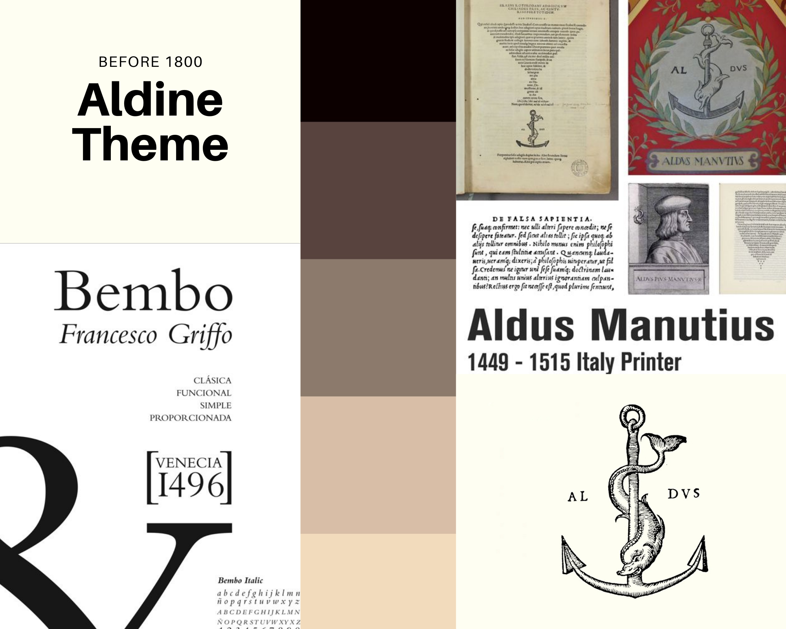
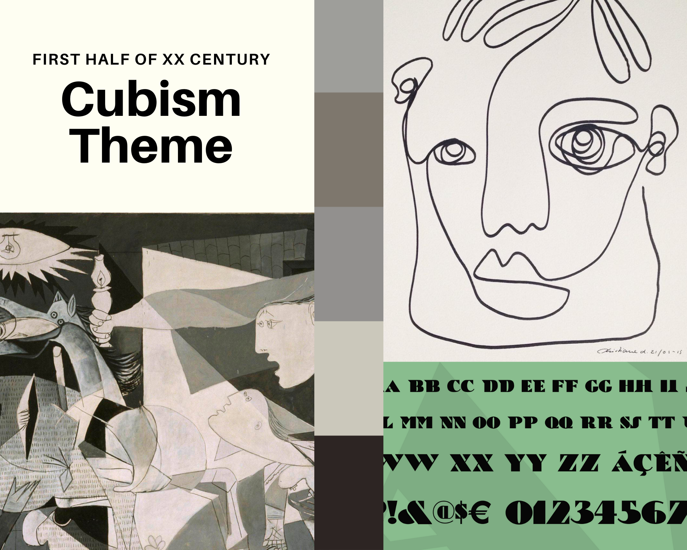

Documentation of the project
Before 1800: Aldine
Motivation
Aldo Manutius was a Venetian scholar, who became a publisher and printer when he founded the Aldine Press in 1495. His typefaces were all designed and cut by the brilliant Francesco Griffo, a punchcutter who created the first Roman type cut from study of classical Roman capitals.
The reference for our style is a typical edition by Aldine Press. The introduction of pocket editions was an extraordinary benchmark in the press history, together with the creation of roman types which are still very common in nowadays magazines and publications. The "Aldine" typeface was recreated by Monotype in 1929. In 1990, the Monotype staff digitized 24 weights of Francesco Griffo's Bembo family, which was originally created in 1496.
Background and font
We chose an ancient paper image for the background and we decided to use an ornamental capital letter for the title initial. The font we chose is ‘Aldine 721’, one of the many fonts inspired by Aldine press, they all are part of the bigger Roman family (e.g. Times New Roman). The font style is classical and old fashioned.
The title font is more decorative and inspired by medieval fashion. Indeed, during the Middle Ages, copists used to decorate manuscripts by drawing miniatures. This trend remained in vogue even with the press advent in the XVI century.
References
Secon half of 1800 : Women Magazines
Motivation
The 19th century is important for the history of women because it’s the first time the publishing industry created a space for them. For sure the topics are frivolous, but still, it’s a space of dialogue. The inspiration for this style comes from different real publications like the “Ladies’ pocket magazine” , or the monthly magazine “The Ladies Companion”.
The layout of the magazines of this time depends on the size of the volumes. Sometimes, in the “pocket” version, we have a full page of text, only with a blank margin and the reference of the article in the upper part of the pages ( the title of the article in the center and the page at the external corner). There were also newspaper-like publications, and in this case we see a double column layout, typical of that time. The choice in our style is driven from the specific layout of the article visualisation interface: since there are the columns , on for each article, and the purpose of the platform is the read and easily compare the articles, a double column layout for the single article would result in a very tight and little columns; for this reason, following the readability criterium, the layout follows the pocket size publication model, with one column of text and a blank margin.
Background and font
The background imitates the only support used by these kinds of magazines: printable gray paper. For the same reason, the images are filtered in order to create a sepia effect, that should recreate the feel of a printed grayscale image. The tables are decorated with flirty graphic motives typical of the women's magazines.
The same criterion guided the choice in terms of typography: the selected fonts are all “eroded” in order to re-create the effect of the printing press and the aging time combined.The font Romantiques Regular is used for the main title. The font Old Europe is a gothic font and is used for secondary titles. The real “body” of the article uses the font OldNewspaperTypes, which imitates the woodcut types from the time. For the remaining parts of text we choose IMFellEnglish in its italic version, similar to the one used for small descriptions in the The Repository Magazine.

References
First half of XX Century: Cubism
Motivation
Cubism is a form of art which was developed by Pablo Picasso and his close associate, Georges Braque, as a means to show the endless possibilities of inventions. Through their research they found that they could easily represent the movement and expression of a human figure and other elements through the use of common shapes, such a s with a collage. Typography was influenced in many ways through the use of Cubism, such as with its practice of integrating letterforms into paintings and design movements into type.
Cubism’s use of fragments would also assist in furthering the many different typographical movements that would begin in the many years after its development. It would also help influence the subsequent development of 20th-century design and even modern day designs, such as magazines, many different designs for companies and places alike as well as the average person’s thought process when creating a design.
Background and font
We realized from scratch the background image using vector graphics. The palette is minimal. Cubist artists simplified their colour schemes to a nearly monochromatic scale (hues of tan, brown, gray, cream, green, or blue were preferred) in order not to distract the viewer from the artist's primary interest—the structure of form itself.
Our source of inspiration was one of Picasso's most famous paintings: Guernica. Both the palette we chose and the design for the background are inspired by the 1937 oil painting exhibited in the Museo Reina Sofía in Madrid.
The font for the title is called “Bric-a-Braque” from a play on the name of one of the co-founders of Cubism, Georges Braque. The font is part of the Deco Type family, where we can find many stylish alphabets of the 20’s and 30’s. Originally called Cubist Bold, the font was designed by John Zimmerman for Barnhard Brothers and Spindler, around 1929. The font we used for the rest of the text is “Quicksand”, both in bold and light versions. Quicksand is a display sans serif with rounded terminals. We chose this Google Font because it combines together readability and design purposes, using geometric shapes as a main feature.
References
2030: The importance of accessibility
Motivation
Building the frame of 2030 style has been very challenging but also important for us. Immediately we have thought about two main aspects: usability and accessibility. We focused on a crucial aspect: the light. Light - and, furthermore, colours - is something that, if well-balanced, allow users with neurological diseases to have a more usable experience. Starting from the direct experience of one of us with epilepsy and photosensibility, we built the style focusing on the importance of fonts, background colors and titles.
To make accessibility the core of the style, we tried to make it evident, accessible, clear and comprehensible. We choose to go around three main colours to maintain the balance between the titles, paragraphs and the background.
We choose to focus on the accessibility through colors, shapes and fonts because light can be a problem for people with epilepsy or photosensibility: as a matter of fact, when dark and light colours are not balanced, it can be very difficult for people with neurological diseases to maintain the focus and browse websites. Photosensibility can be activated through though balancing of colours and this can be a big problem for users with this disease.
Background and fonts
The choice of the background has been driven by the need of having a colour that let the text being readable, both with black and white text. The background is one full color, without images, for the same reason: no interference with the text. The text need to be fully readable. That colour, also, leads to the choice of focusing on the balancing of light for people with neurological diseases.
For what concerns the choice of fonts, we prefer to select one font, very legible and regular, sans serif. This aims to let the legibility be easier, even with lighter colours. The font we choose is “Titillium Web” and we choose to change it whereas there is a paragraph or a title, to maintain a certain type of hierarchy and let the user understand better which are the subtitles or the paragraphs. Bold and regular fonts are used to underline the difference between the various parts of text.
The choice of our layout is driven from the specific criteria we had to follow as required. Double columns to read an article would have been so difficult to access, even for the readability. So, we decided to display each article in one scrollable column and a blank margin. Images and tables are displayed between the paragraphs and they all have the ALT text to better accomplish the accessibility criteria. As for the tables, we decided to show them with different colours for different columns, to make them more readable.

References
Second half of XX century: the Hippie movement
Motivation
The Hippie movement has born in the mid ‘60 as a youth movement, then spread around the world. Today, sometimes it is used to isolate and denigrate some left-leaning parties. The Hippie movement has been a crucial movement in the development of art in all various forms, including magazines, covers, posters. But, most of all, music has influenced all these things: one of the masterpieces that we can take as a pillar of this movement is the album by Beatles called “Sgt. Pepper's Lonely Hearts Club Band”. This album brought the values of the counterculture into the mainstream.
Through the music, all the arts have been influenced by the Hippie Movement. The important thing is change. Hippie movement comes as a renewal movement starting from the post II World War. The American hippie became also famous, years later for their influence in the widespread Vietnam protests and helped to define their role in the tumultuous 1960s.
Background and fonts
We chose to set a shining and colourful background to underline the power of the creativity in that years. We took as references the most important subculture magazines of 60s, who privileged background that could remind to the important slogan and images of the movement. Another important reference were the posters of Nambassa festivals but, for sure, the cover of Stg. Pepper’s.
For what concerns the choice of fonts, we choose two fonts that could remind to those years. These two fonts are different between titles and paragraphs. Bold and regular fonts are used to underline the difference between the various parts of text. Those fonts are linked to the fonts used during the 60s in festivals posters but also in music magazines. The two fonts we choose are “Mainsain” and “Bookends”.

References
Late 1900 - Early 2000s : Hip Hop
Motivation
An unprecedented trend emerging in this period is for sure hip hop. This culture , initially from the streets and precluded inside the gettos, slowly contaminated all the aspects of the mainstream occidental world and influenced particularly fashion and contemporary art. In fact the graffiti - a pillar of the hip hop culture together with rap, turntabulism and breakdance - created a new and democratic form of expression combining visual art and typography.
An unprecedented trend emerging in this period is for sure hip hop. This culture , initially from the streets and precluded inside the gettos, slowly contaminated all the aspects of the mainstream occidental world and influenced particularly fashion and contemporary art. In fact the graffiti - a pillar of the hip hop culture together with rap, turntabulism and breakdance - created a new and democratic form of expression combining visual art and typography.
Background and font
The graffiti feeling is recreated through the fonts and the background combined together.
The fonts are mostly of the kind handwritten. We choose them in relation with the functions of the text, from the shorter parts - more decorative - to the body of the text - that is a minimal capital handwriting-like font. Thus we have Degrassi for titles and Digitag for secondary titles and Rock Salt for the full text. For the remaining parts of the text we integrated a non-handwritten font, Bungee, that is minimal and bold at the same time, as typical in the rap magazines. This feature is applied to images as well, with a black shadow effect in the borders.
The background gives back the colorful and flamboyant feeling, taken away from the serialisation of digital fonts. In fact, the background is a static gradient in eye-catching color: from yellow to a very hot orange.